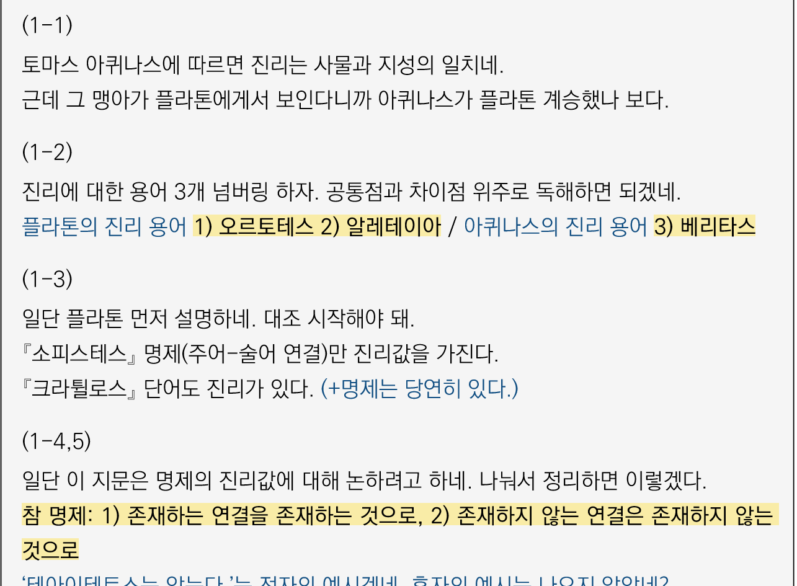
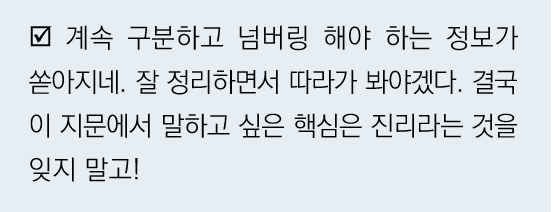

출제진에서 강사로,
단과에서 재종으로
아이가 오독하면 다시 읽으라고 하지 않습니다. 왜 거기서 오독이 났는지를 분석하고 행동을 교정합니다.
- 이전시대인재 국어 콘텐츠팀, 서바이벌 모의고사 출제
- 2026. 1대찬학원 단과 개강
- 2026. 6시대인재 재수종합반 입성
- 2027재종 수업 확대
- 2027 대찬두 반만, 소수 밀착
절대적인 실력의
네 요소
넷 다 배워야 하고, 넷 다 배웁니다. 시즌마다 집중하는 요소가 다를 뿐입니다.
순수 독해력
문장과 문장을 잇고 다음을 예측한다
기점선지 판단의 명징성
정확하게, 그리고 빠르게
기점배경지식
연계 교재를 포함해, 효율로
단련실전 능력
앞의 셋을 떨리는 순간에도 그대로
파이널같은 지문을 어떻게 읽는지,
문장마다

분석서 실물입니다.
분석서
아이는 혼자 풀고 나서 자기 읽기와 이 글을 한 줄씩 대봅니다. 어디서 문제가 생겼는지가 보입니다. 수업 교재뿐 아니라 주간지 과제에도 들어가고, 한 줄 한 줄 직접 씁니다.

파란 상자는 아이에게 하는 말이라 반말로 씁니다.


매주 나가는 교재 넷,
전부 직접 만듭니다
- 수업 교재와 주간지수업은 독서 3지문, 문학 5~6지문. 주간지는 매일 독서 한 지문, 문학 한 지문으로 배운 것을 체화합니다.
- 하루 한 지문, 취약 제재경제, 과학기술, 동서양 철학처럼 아이들이 어려워하는 제재를 매주 한 테마씩 다섯 지문.
- 문학 하프 모의고사문학 네 세트를 25분 안에.
- 화법·언어·작문 주간지매주 두 세트.
- 여름과 가을에는서바이벌 독서 교재, 파이널 교재 세 종류가 더해집니다.
2028학년도 Curriculum
기점에서 배우고, 단련에서 적용하고, 파이널에서 각자의 한 끗을 채웁니다.
기점 起點
12월 26일 개강, 3월 학평 직전까지. 여기서 배웁니다.
- 독서
- 출제자의 시선으로 사고를 재설계하다평가원, LEET, PSAT 고난도 지문으로 독해 감각을 만들고, 여러 지문의 공통 독해 포인트로 일관된 독해 태도를 세웁니다.
- 문학
- 오답의 논리를 해체하고 확실성을 체화하다평가원 문항으로 출제 논리를 배우고, 매력적인 오답 선지를 분석해 선지 판단의 명징성을 올립니다.
- 주간지
- 첫 주부터 매일 독서 하나, 문학 하나, 화법·언어·작문 두 세트언매를 하지 않은 학생도 담화 속 문법을 매주 만납니다.
- 실모
- 3월 학평 전 차준호 모의고사 현장 응시 2회
단련 鍛鍊
3월 27일 ~ 8월 7일, 수업 12주. 여기서 적용합니다.
- 독서
- 고난도 독해를 통한 사고의 입체화영역별 기출 분석으로 취약 제재의 독해 자신감과 배경지식을 만들고, 수특·수완 필수 지문에 기점의 읽는 법을 그대로 적용합니다.
- 문학
- 확실한 실력에 연계를 더하다기출 분석으로 갈래별 행동 강령을 다지고, 수특·수완 전 작품을 정리합니다.
- 실모
- 6월 모평 전 시대인재 서바이벌 현장 응시 1, 2, 3회
- 휴강
- 중간고사 4주, 기말고사 4주휴강 중 공부할 자료를 따로 드리고, 카톡 질문은 열려 있습니다.
8월 모평 대비 현장 응시
8월 14일, 8월 21일. 서바이벌 현장 응시 2회와 직전 행동 강령.
____ IS ALL YOU NEED
8월 28일 ~ 11월 13일, 12주. 여기서 각자의 한 끗을 채웁니다.
- 독서
- 실전 대응력의 완결판실전적 독해와 이상적 독해를 합치고, 극도의 긴장 속에서도 놓쳐서는 안 되는 행동 강령을 익힙니다.
- 문학
- 평가원형 실전 감각의 완성역대 주요 출제 포인트와 수특·수완 연계 작품을 총정리하고, 시간 압박 속에서 실마리를 찾는 연습을 합니다.
- 실모
- 매주 실전 모의고사와 파이널 교재 세 종류
- 상담
- 매주 실모 후 개별 상담, 1년치 성적 기록기점부터 현장에서 본 모든 시험을 기록합니다. 수업 날도 OMR로 채점합니다. 그 데이터로 표지 빈칸에 들어갈 단어를 아이와 같이 찾습니다.
날짜는 토요일반 기준이고 월요일반은 이틀 뒤입니다. 명절 휴강은 없습니다. 수능은 2027년 11월 18일(목)이며, 8월 모평 날짜는 평가원 공고 후 확정됩니다.
입반과 일정
- 입반 조건고2 모의고사 국어 백분위 98 이상
- 토요일반09:30 ~ 13:00, 12월 26일 개강
- 월요일반18:00 ~ 21:30, 12월 28일 개강
- 관리수업 전 개별 상담, 개별 카톡 질의응답, 강사 직접 피드백, 현장 응시 성적 1년 기록
등록 안내
등록과 상담은 대찬학원에서 받습니다.